말랑이
주인공 · 영웅 젤리강아지 귀가 달린 분홍 젤리. 겁은 많지만 친구 일이라면 제일 먼저 뛰어나가요. 플레이 화면 아래에서 핸들을 돌려 거품 대포를 움직여요.
장난꾸러기 악당 노놈이 마법 거품으로 젤리 친구들을 납치했어요. 혼자 남은 영웅 젤리 말랑이가 거품 대포를 끌고 다섯 디저트 월드, 30개 스테이지를 지나며 친구 30명을 구해, 다시 웃음 가득한 젤리마을로 돌아가는 이야기예요.
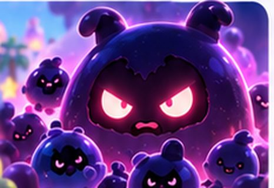
이름에 제안이 붙은 건 제가 지어 본 이름이라 바꾸셔도 돼요.
강아지 귀가 달린 분홍 젤리. 겁은 많지만 친구 일이라면 제일 먼저 뛰어나가요. 플레이 화면 아래에서 핸들을 돌려 거품 대포를 움직여요.
"말랑한 건 전부 내 디저트!" 마법 거품으로 젤리를 가둬 성으로 데려가는 장난꾸러기. 부하 꼬마 놈놈들을 거느려요.
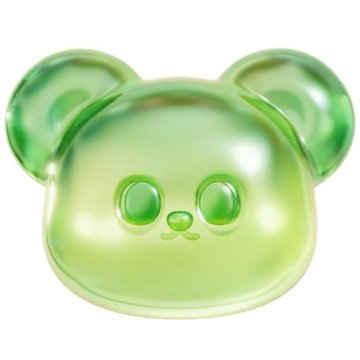
말랑이의 단짝인 라임 곰젤리. 시럽 숲 첫 스테이지에서 구출돼요. 구한 뒤엔 행렬 맨 앞에서 길을 안내해요.
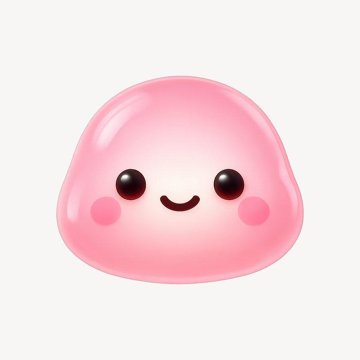
마을의 막내 딸기 젤리. 튜토리얼에서 처음 구하는 친구라, 구출 장면을 처음 보여 주는 역할을 해요.
스테이지마다 1명씩, 모두 30명. 구한 친구는 대포 옆에 줄 서서 차례를 기다리다 대포 탄이 되어 줘요.
3막 14컷. 휴대폰 화면은 레퍼런스 그림 위에 자막·대사·버튼을 올린 배치안이고, 핸들·줄서기·지도·스티커 북은 새로 그렸어요.
처음 실행할 때 한 번 나오는 짧은 컷신이에요. 화면을 누르면 다음 컷, 오른쪽 위 "건너뛰기"로 바로 넘길 수 있어요.
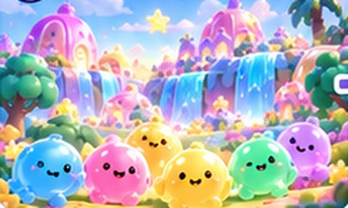
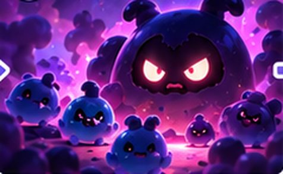
이 컷의 거품 색이 게임 속 거품 색과 같아요.
스테이지를 하나 깰 때마다 친구 한 명을 구하고, 친구 스티커를 받고, 말랑이가 지도에서 한 칸 앞으로 걸어가요.
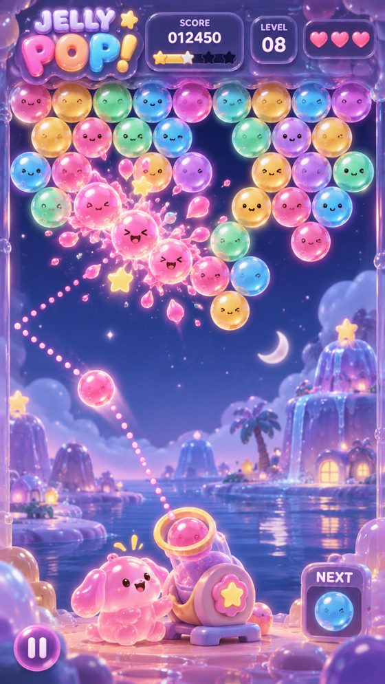
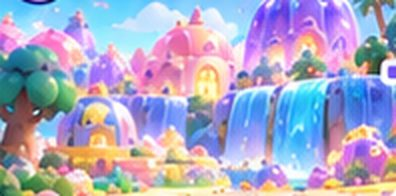
핸들을 빨리 돌리면 말랑이가 땀을 흘리고, 멈추면 숨을 고르는 작은 연출(제안).
줄에 선 친구 수 = 남은 발사 횟수라서 따로 숫자를 안 봐도 돼요.
스티커 북 1 / 30 · 점수 12,450
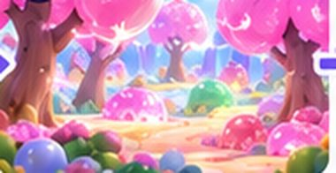
30번째 스테이지에서 노놈과 대결하고, 친구 30명과 함께 마을로 돌아가요.
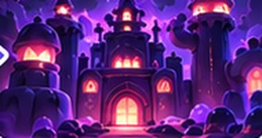
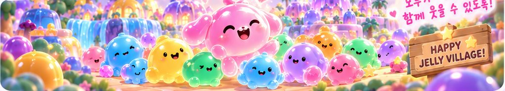
월드 5개 × 6스테이지. 스테이지마다 배경, 구할 친구(= 받을 스티커), 새 놀이 요소가 달라요. 이름과 장치는 제안이에요.
맑은 낮에서 노을까지, 폭포와 젤리 집이 있는 마을
이 월드의 새 장치: 기본 규칙 익히기분홍 나무와 시럽 시냇물이 흐르는 숲
이 월드의 새 장치: 끈적 시럽 거품: 두 번 맞혀야 터짐탱글탱글 푸딩과 캐러멜 종유석이 가득한 동굴
이 월드의 새 장치: 흔들 푸딩: 맞으면 옆 거품 색이 바뀜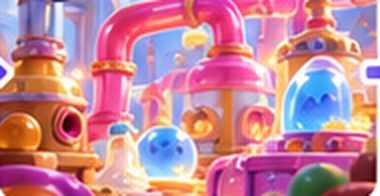
파이프와 컨베이어가 돌아가는 거대한 공장
이 월드의 새 장치: 컨베이어: 거품 줄이 옆으로 움직임보랏빛 마법이 감도는 노놈의 성
이 월드의 새 장치: 앞 월드 장치가 모두 섞여 나옴모으는 재미를 세 단계로 나눴어요.
스테이지를 처음 깨면 그 스테이지에서 구한 친구 스티커 1장. 다시 깨도 중복으로 주지 않아요.
한 월드의 스티커 6장을 다 모으면 스티커 북 그 줄에 월드 스탬프가 찍혀요.
스테이지마다 별 최대 3개. 별을 모으면 대포 꾸미기(색·무늬)가 열려요(제안).
구한 친구는 지도에서 말랑이 뒤를 따라 걷고, 플레이 중에는 대포 옆 줄에 서서 차례를 기다려요.
답이 없으면 추천대로 진행해요.
주인공 말랑이 · 30스테이지 · 클리어마다 친구 구출 + 스티커 · 스탬프 모으기 · 스테이지별 배경 · 핸들 돌리는 말랑이 · 줄 서는 친구들
레퍼런스 같은 고급 3D 그림은 이미지 파일이 필요해요. 코드로 그린 젤리와 배경으로 먼저 만들고, 그림은 나중에 바꿔 끼울 수 있어요.
추천: 코드 그림으로 먼저
30개를 한 번에 만들기보다 월드 1(6스테이지)을 먼저 완성해 손맛을 확인하고 나머지를 이어서 만들어요.
추천: 월드 1 먼저